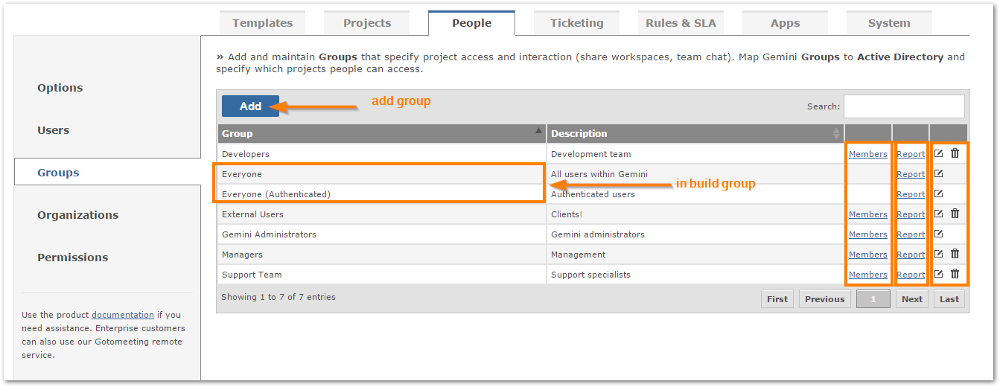
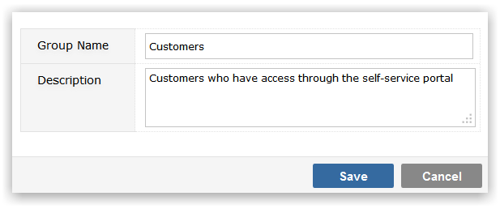
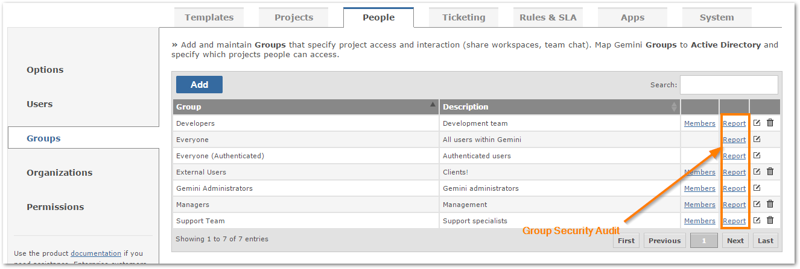
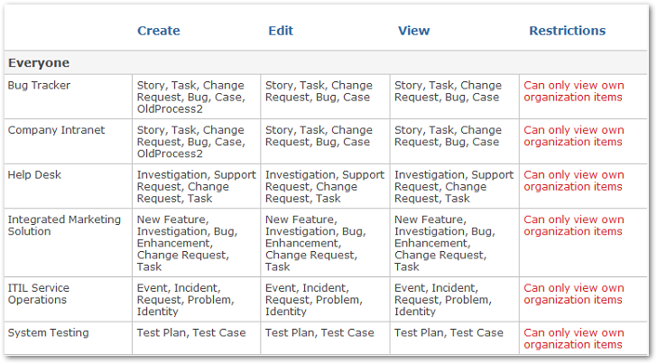

User Groups are used to control access to projects data and metadata, such as menus and fields on screens.
You can add, delete, edit and search for existing groups.

Click the Add button to create a new group.

You can now view group permissions across all projects to see which actions they can perform.

See a list of processes the group can create, edit and view for each project.
